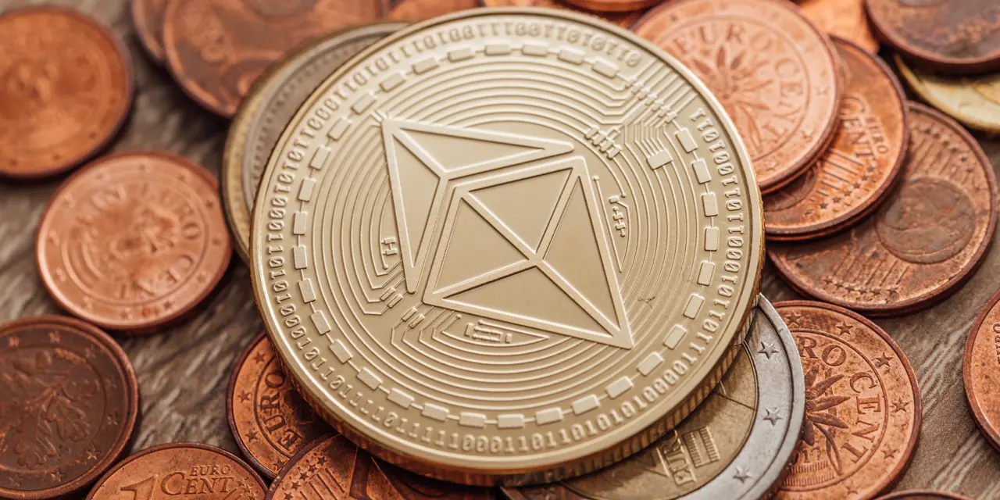

이더리움 가격전망을 말할 때 가장 위험한 방식은 “몇 달 안에 얼마까지 갑니다”라고 숫자 하나만 먼저 던지는 일입니다. 2026년 6월 3일 오후 기준 ETH는 약 1,860달러대에서 움직이고 있습니다. 가격만 보면 답답한 구간처럼 보이지만, 지금 이더리움을 판단하는 핵심은 가격표가 아니라 가격을 다시 움직일 조건이 실제로 돌아오고 있는지입니다. ETF 순유입, 스테이킹 수익, 네트워크 수수료, ETH 소각, ETH/BTC 상대강도가 함께 움직여야 전망의 질이 달라집니다.
주주와 투자자가 지금 가장 궁금해할 질문은 “이더리움이 다시 3천달러를 넘을 수 있나”일 가능성이 큽니다. 답은 가능합니다. 다만 조건이 붙습니다. 현물 ETF가 순유입으로 돌아서고, 스테이킹 상품과 기업 트레저리 수요가 실제 ETH 잠김 물량을 늘리며, 레이어2 사용 증가가 다시 이더리움 본체의 수수료와 소각으로 연결돼야 합니다. 반대로 이 세 가지가 따로 움직이면 가격은 뉴스보다 느리게 반응할 수 있습니다.
그래서 이 글의 결론은 단순합니다. 1년 전망을 넓게 보면 약세 시나리오에서는 1,300~1,600달러 재시험, 기본 시나리오에서는 1,700~2,600달러 박스권, 강세 시나리오에서는 3,000달러 이상 회복을 생각할 수 있습니다. 하지만 이 범위는 목표가가 아니라 점검표입니다. 이더리움은 비트코인처럼 “희소성 하나”로 설명하기 어렵고, 주식처럼 “사용량과 현금흐름 비슷한 신호”를 같이 봐야 하는 자산입니다.
가격보다 네트워크 수수료가 먼저 움직여야 합니다

이더리움의 강점은 단순 결제 코인이 아니라 스마트계약 플랫폼이라는 점입니다. 디파이, 스테이블코인, 토큰화 증권, NFT, 레이어2, 온체인 게임, 기관 결제 실험이 많아질수록 네트워크 수수료와 검증자 보상이 살아날 수 있습니다. 그런데 최근 시장이 답답하게 보는 지점도 여기입니다. 레이어2가 싸고 빨라질수록 이용자는 많아질 수 있지만, 그 사용량이 곧바로 이더리움 본체의 높은 수수료와 강한 소각으로 이어지지는 않을 수 있습니다.
투자자는 ETH 가격 차트보다 세 가지를 먼저 봐야 합니다. 첫째, 이더리움 메인넷 수수료가 다시 늘어나는지입니다. 둘째, 레이어2 데이터 게시 비용과 blob 수요가 꾸준히 증가하는지입니다. 셋째, ETH 소각량이 발행량을 얼마나 상쇄하는지입니다. 이 세 가지가 약하면 이더리움은 “좋은 인프라”라는 평가를 받아도 가격 탄력은 약할 수 있습니다. 반대로 수수료와 소각이 살아나면 ETF나 트레저리 수요가 같은 금액으로 들어와도 가격 반응이 훨씬 강해질 수 있습니다.
이더리움 재단의 Pectra 로드맵처럼 네트워크 업그레이드는 사용자 경험, 검증자 운영, 계정 기능을 개선하는 방향으로 이어지고 있습니다. 다만 업그레이드가 곧바로 가격 상승을 뜻하지는 않습니다. 기술이 좋아졌다는 말과 사용자가 더 많은 수수료를 내며 네트워크를 쓴다는 말은 다릅니다. 이더리움 가격전망의 첫 번째 기준은 업그레이드 발표가 아니라 업그레이드 뒤 실제 사용료가 회복되는지입니다.
따라서 단기 가격이 지루하더라도 네트워크 지표가 먼저 좋아진다면 전망은 달라질 수 있습니다. 반대로 가격만 튀고 수수료와 소각이 따라오지 않으면 그 상승은 오래 버티기 어렵습니다. 이더리움은 기술 내러티브가 큰 자산이지만, 결국 시장은 “그 기술이 얼마나 자주 쓰이고, ETH 보유자에게 어떤 경제적 압력을 만드느냐”를 다시 묻게 됩니다.
ETF와 스테이킹은 수요를 만들지만 속도가 다릅니다
관련 영상
나스닥 상장사 200곳이 담은 이더리움, 가격이 안 움직이는 이유
현물 ETF는 이더리움 전망에서 중요한 통로입니다. 기관과 일반 투자자가 지갑 관리, 프라이빗키 보관, 거래소 계좌 없이 ETH 가격에 접근할 수 있기 때문입니다. 미국 증권거래위원회가 2024년 현물 이더리움 상장지수상품 관련 거래소 규칙 변경을 승인한 뒤, 시장은 ETH에도 비트코인 ETF와 비슷한 기관 자금 흐름을 기대했습니다. 하지만 현실에서는 자금 유입 속도와 가격 반응이 늘 같은 속도로 움직이지 않습니다.
비트코인 ETF와 비교하면 이더리움 ETF는 설명해야 할 내용이 더 많습니다. 비트코인은 디지털 금이라는 단순한 프레임이 강합니다. 이더리움은 네트워크 사용료, 스테이킹 보상, 레이어2, 디파이, 규제, 개발 로드맵을 같이 설명해야 합니다. 투자자가 이해해야 할 변수가 많으면 기관 자금이 들어오는 속도도 느릴 수 있습니다. ETF가 있다고 해서 곧바로 강세장이 시작되는 것이 아니라, ETF 순유입이 몇 주 이상 반복되는지 확인해야 합니다.
이더리움 공식 스테이킹 안내를 보면 스테이킹은 네트워크 보안을 돕고 보상을 받는 구조입니다. 이 점은 ETH와 비트코인을 가르는 핵심 차이입니다. 스테이킹 수익률이 안정적으로 보이면 ETH는 단순 가격 노출이 아니라 수익형 네트워크 자산처럼 평가받을 수 있습니다. 특히 BMNR, SBET 같은 이더리움 트레저리·스테이킹 노출 종목이 늘어나면 주식시장 안에서도 ETH 수요를 간접적으로 추적하는 통로가 생깁니다.
다만 스테이킹 역시 자동 강세 재료는 아닙니다. 스테이킹 참여율이 너무 높아지면 유통량은 줄어들 수 있지만, 보상률은 낮아질 수 있습니다. 또 ETF 안에서 스테이킹을 어디까지 허용할지, 수익을 투자자에게 어떻게 배분할지, 규제기관이 어떤 조건을 붙일지에 따라 수요의 질은 달라집니다. 그래서 이더리움 전망에서는 “ETF가 있다”보다 “ETF 순유입이 반복되고, 스테이킹 수익이 제도권 상품 안으로 들어오는가”를 봐야 합니다.
상승 시나리오는 세 가지 숫자가 동시에 좋아질 때입니다
이더리움의 강세 시나리오는 생각보다 선명합니다. 첫째, 현물 ETF가 순유입을 이어가야 합니다. 일시적인 하루 유입보다 중요한 것은 4주, 8주, 12주 흐름입니다. 둘째, 네트워크 사용료와 ETH 소각이 회복돼야 합니다. 레이어2 거래가 많아져도 이더리움 본체가 경제적 가치를 거의 가져오지 못하면 가격은 둔하게 움직일 수 있습니다. 셋째, ETH/BTC 상대강도가 돌아서야 합니다. 암호화폐 시장 전체가 강해져도 ETH가 비트코인보다 계속 약하면 투자자의 체감 전망은 좋아지기 어렵습니다.
이 세 조건이 동시에 좋아지면 3,000달러 이상 회복은 무리한 상상이 아닙니다. 특히 스테이블코인 결제, 토큰화 국채, 실물자산 토큰화, 기관 커스터디, 온체인 파생상품이 다시 커지면 이더리움은 단순 코인이 아니라 금융 인프라로 재평가될 수 있습니다. 이때 코인베이스는 거래·수탁·스테이블코인 수익으로, 로빈후드는 개인 투자자 거래량과 크립토 상품 확장으로, BMNR과 SBET는 ETH 보유와 스테이킹 노출로 관심을 받을 수 있습니다.
다만 주식 관련종목을 볼 때도 같은 질문을 적용해야 합니다. COIN은 ETH 가격보다 거래량, 수탁 잔고, USDC 수익, Base 사용량이 중요합니다. HOOD는 크립토 거래량이 Gold 구독, 순입금, 고객 자산 유지로 이어지는지가 중요합니다. BMNR과 SBET는 보유 ETH 수량보다 주당 순자산가치, 희석, 스테이킹 보상, 자금조달 조건이 중요합니다. ETH가 오른다고 관련종목이 모두 같은 비율로 오르는 것은 아닙니다.
강세 시나리오의 핵심은 “이더리움이 다시 많이 쓰인다”는 증거입니다. 가격이 먼저 움직일 수도 있지만, 가격이 오래 버티려면 사용량과 자금 유입이 뒤따라야 합니다. 그래서 투자자는 온체인 수수료, ETF 순유입, 스테이킹 참여율, ETH/BTC 비율을 한 화면에 놓고 봐야 합니다. 이 네 지표가 동시에 개선될 때 이더리움 전망은 가장 설득력 있게 좋아집니다.
하락 시나리오는 네트워크의 조용함에서 시작됩니다
약세 시나리오는 가격 급락 뉴스보다 조용한 지표에서 먼저 보일 수 있습니다. 이더리움 메인넷 수수료가 낮고, 레이어2는 많아졌지만 ETH 소각 압력이 약하며, 디파이와 NFT, 온체인 거래가 과거만큼 뜨겁지 않으면 시장은 ETH를 성장 자산으로 다시 평가하기 어렵습니다. 이 경우 1,700달러 부근 지지가 깨지면 1,300~1,600달러 구간을 다시 확인할 가능성을 열어둬야 합니다.
또 다른 약세 요인은 비트코인 대비 상대 약세입니다. 암호화폐 시장에서 위험 선호가 제한적일 때 자금은 먼저 비트코인으로 갑니다. ETF 접근성이 비슷해져도 비트코인이 더 단순한 자산으로 받아들여지면 ETH는 설명 비용이 높은 자산처럼 보일 수 있습니다. 개발 로드맵이 좋아도 투자자가 체감하는 수익 구조가 복잡하면 자금은 기다립니다.
규제도 하락 시나리오의 한 축입니다. 스테이킹 상품, 디파이 수익, 토큰화 자산, 거래소 상장 기준은 모두 규제 문구에 민감합니다. 규제가 명확해지는 것은 장기적으로 호재일 수 있지만, 단기에는 비용과 등록 요건, 상품 제한을 만들 수 있습니다. 특히 스테이킹 수익을 제도권 상품에 넣는 과정에서 예상보다 보수적인 조건이 붙으면 ETH 수요 기대는 늦춰질 수 있습니다.
마지막으로 기업 트레저리 수요도 양날입니다. BMNR이나 SBET 같은 회사가 ETH를 많이 보유하면 수요가 늘어나는 것처럼 보입니다. 그러나 이런 회사들이 주식 발행을 통해 ETH를 사는 구조라면 시장은 ETH 가격뿐 아니라 희석과 자본조달 조건을 같이 봅니다. 관련종목 주가가 흔들리면 “기업들이 ETH를 계속 사줄 것”이라는 기대도 약해질 수 있습니다. 이더리움 가격전망은 코인 시장 안의 문제이면서 동시에 주식시장 자금조달 환경의 문제입니다.
투자자는 목표가보다 네 가지 확인표를 먼저 봐야 합니다
첫 번째 확인표는 ETF 순유입입니다. 하루 수치보다 누적 흐름이 중요합니다. 순유입이 반복되면 시장은 ETH를 제도권 포트폴리오 자산으로 다시 보기 시작합니다. 반대로 순유출이 이어지면 ETF는 호재가 아니라 매도 통로처럼 해석될 수 있습니다.
두 번째 확인표는 네트워크 사용료와 소각입니다. 이더리움은 사용될 때 가치 논리가 강해집니다. 레이어2의 거래 증가가 이더리움 본체의 데이터 수요와 수수료로 연결되는지, ETH 공급 증가를 소각이 얼마나 상쇄하는지 확인해야 합니다. 이 부분이 회복되면 가격전망은 훨씬 건강해집니다.
세 번째 확인표는 스테이킹입니다. 스테이킹 참여율, 보상률, 슬래싱 사고 여부, 제도권 상품 편입 가능성을 함께 봐야 합니다. 스테이킹은 ETH를 수익형 자산처럼 보이게 만들 수 있지만, 보상률이 낮아지거나 규제가 막히면 기대가 줄어듭니다.
네 번째 확인표는 ETH/BTC 상대강도입니다. 암호화폐 시장 전체가 오를 때 ETH가 비트코인을 따라가지 못하면 자금의 우선순위가 아직 돌아오지 않았다는 뜻입니다. 반대로 ETH/BTC가 바닥을 만들고 올라오면 시장은 이더리움의 네트워크 가치와 스테이킹 수익을 다시 가격에 반영하기 시작할 수 있습니다.
정리하면 이더리움은 지금 싸다, 비싸다 하나로 끝낼 자산이 아닙니다. 약 1,860달러대 가격은 기회일 수도 있고, 아직 검증이 필요한 중간 지점일 수도 있습니다. 상승을 보려면 ETF 순유입, 스테이킹 수익, 네트워크 수수료, ETH/BTC 상대강도가 함께 좋아지는지 확인해야 합니다. 이 네 가지가 맞물리면 3,000달러 이상 회복 전망이 힘을 얻습니다. 하나씩 어긋나면 이더리움은 좋은 기술을 가진 채로도 가격은 더 오래 쉬어갈 수 있습니다.